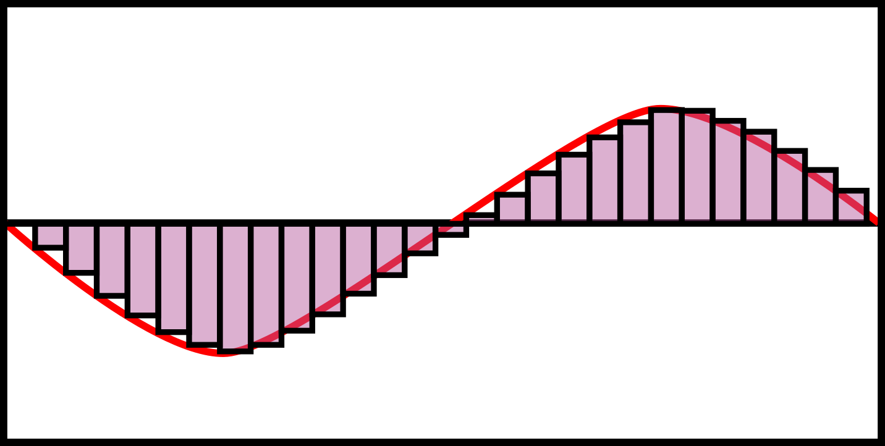
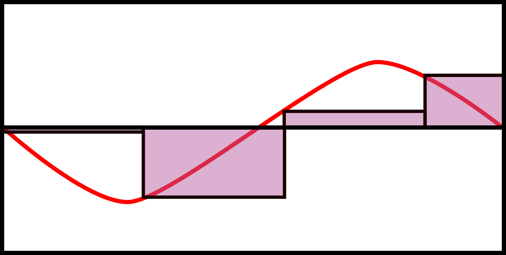
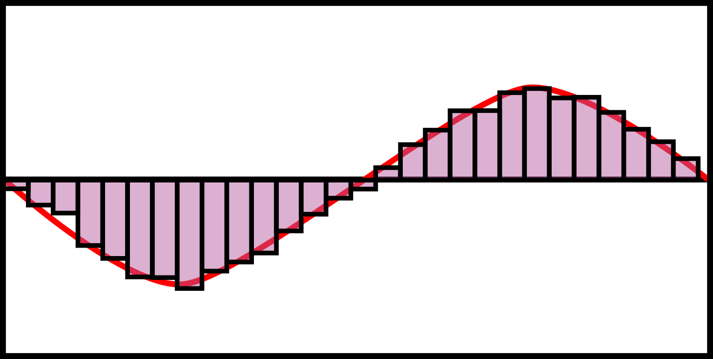

My Problem with Crushing Bits
The initial trials and tribulations of my first audio-plugin
TLDR:
I figured out how to get started with audio-plugin writing, wrote my own bitcrushing effect, the effect basically only has two modes, very crushed or not even audible.
Rocky Beginnings
My experience with C++ is somewhat limited compared to other languages and I have heard it described as an abomination of a language. None the less most audio-plugins seem to be written in C++ for better or for worse. Through a combination of youtube videos and documentation pages I have amassed enough of a grasp of C++ and the JUCE framework to produce my own plugins but this was only the start of my issues. Two days of coding and learning got me a plugin but this has opened a whole can of worms that I have yet to fully fix.
Sampling and Bitcrushing
To put it simply, bitcrushing lowers the resolution of an audio input to give it a certain quality. If the resultion is lowered slightly this can make the sound warmer, if it is lowered a lot it can make the sound very distorted and harsh. In digital audio a continuous wave is sampled, or measurements are taken at discrete intervals and recorded. If the rate of measurements taken is above what is called the Nyquist rate then the discrete signal can be perfectly reconstructed into a continuous signal once again. This was proven by Claud Shannon, Harry Nyquist, among others and is very important when it comes to digitizing signals.
The two main ways of lowering this resultion boil down to lowering the amount of times that the sound is sampled per second but also lowering the amount of information stored in each sample. We can visualize the sampling process as seen in the following figure. The bars represent the measurements taken of the red continuous signal. The width of the bar represents the amount of time between the next measutement. The more bars, or the shorter time between measurements the more accurate the discrete values are at modeling the wave. With Fourier series the bars need to only need to have a width half the size of the highest frequency to recreate the discrete wave but this example uses a sample rate much higher.
Standard Sampling Example
Now we can lower the resolution based on the sampling in two main ways. the first being increasing the time between samples. This way of lowering the resolution does gives us less information about the wave and therefore we will get some distortion known as aliasing if the sample rate falls below the Nyquist rate.
Sampling at a Lower Rate
We can also lower the resolution by not allowing as much information to be stored in each sample. Each sample will be stored typically using a floating point number to represent the amplitude of the wave. We can round this number in such a way that the sample is not exactly representative of the wave but it is close.
Sampling with Less Information
The simplest way of rounding would be chopping off the last digit of the decimal value. Taking the example below the difference between the values 0.153 and 0.150 is not monumental but can alter the sound giving a slight distortion as information is lost. When we round to 0.100 the difference will be much more noticable. If we round all the digits then the values will only be able to be integer values and this amount of distortion will make us unable to reconstruct the wave in any meaningful way.
Chopping Off Bits
My Own Bitcrusher
This last option was the one I chose for my own plugin. Getting this up and running in C++ and working in Ableton took a little bit of work but sure enough I was able to bitcrush my songs. The big issue I ran into was dropping the values at the end made only a slight difference in the sound while chopping off the 10s and 100s places made a huge difference in the sound. The following codeblock illustrates the simple way given audio channels of samples then in C++ an easy way to chop off digits is to multiply the value by 10 to the power of the number of digits to keep, then round that value, and divide by 10 to the power of the number of digits to keep.
In the end this method left a lot to be desired. The slider I programmed did not uniformly bring the level of bit crushing higher but rather had very noticable jumps at higher settings and barely audible change at lower levels. The solution I think I would like to try is logarithmic rounding so the values at first are rounded quickly and as we round the values get rounded much more slowly. This will be for another time.
References & Futher Reading
Pharr, Matt; Jakob, Wenzel; Humphreys, Greg. Physically Based Rendering: From Theory to Implementation. November 2016.
Cover, Thomas M.; Thomas, Joy A. Elements of Information Theory. October 2001.
https://en.wikipedia.org/wiki/Bitcrusher
https://en.wikipedia.org/wiki/Sampling_(signal_processing)
https://en.wikipedia.org/wiki/Nyquist_rate